Sentinel提供一个轻量级的开源控制台，它提供机器发现以及健康情况管理、监控（单机和集群），规则管理和推送的功能。本节将详细记录何如通过Sentinel控制台控制Sentinel客户端的各种行为。Sentinel控制台的功能主要包括：流量控制、降级控制、热点配置、系统规则和授权规则等。
安装控制台
Sentinel控制台下载地址：https://github.com/alibaba/Sentinel/releases，本节我们下载sentinel-dashboard-1.7.1.jar版本，下载好后使用java -jar sentinel-dashboard-1.7.1.jar命令启动即可，默认的端口号为8080：
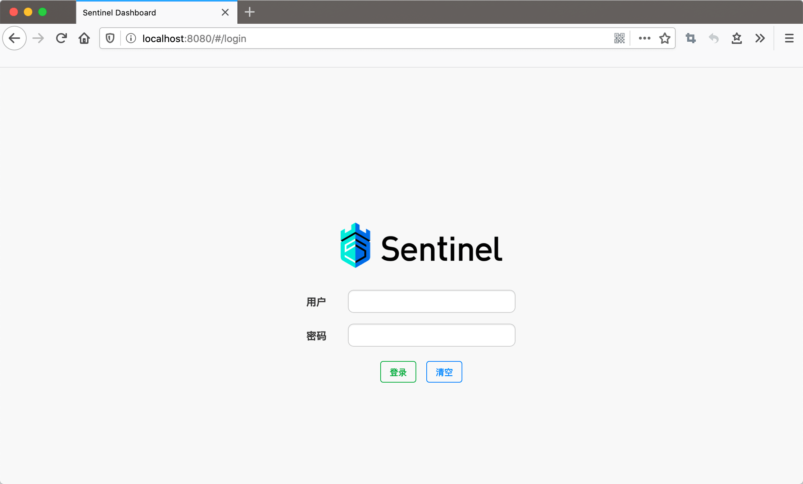
账号密码都是sentinel。
更多可用的启动参数配置：
Dsentinel.dashboard.auth.username=sentinel用于指定控制台的登录用户名为 sentinel；Dsentinel.dashboard.auth.password=123456用于指定控制台的登录密码为 123456，如果省略这两个参数，默认用户和密码均为 sentinel；Dserver.servlet.session.timeout=7200用于指定 Spring Boot 服务端 session 的过期时间，如 7200 表示 7200 秒；60m 表示 60 分钟，默认为 30 分钟；-Dcsp.sentinel.dashboard.server=consoleIp:port指定控制台地址和端口。
搭建客户端
新建一个Spring Boot项目，artifactId为spring-cloud-alibaba-sentinel-dashboard-guide，项目结构如下所示：
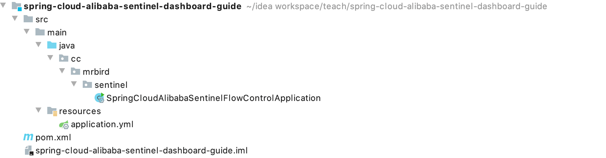
项目pom内容：
1 |
|
引入了spring-cloud-starter-alibaba-sentinel和spring-boot-starter-web依赖。
接着在cc.mrbird.sentinel目录下新建controller包，然后在该包下新建TestController：
1 |
|
最后在项目配置文件application.yml中添加如下配置：
1 | server: |
spring.cloud.sentinel.transport.dashboard，指定了sentinel控制台的ip和端口地址；spring.cloud.sentinel.transport.port，sentinel客户端和控制台通信的端口，默认为8719，如果这个端口已经被占用，那么sentinel会自动从8719开始依次+1扫描，直到找到未被占用的端口。
启动项目，使用浏览器多次访问：http://localhost:8081/test1，然后登录sentinel控制台：
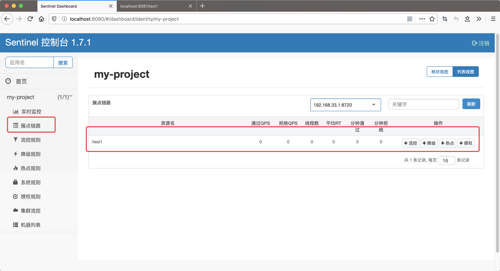
在簇点链路中可以看到刚刚那笔请求，我们可以对它进行流控、降级、授权、热点等配置（控制台是懒加载的，如果没有任何请求，那么控制台也不会有任何内容）。
流控规则
在簇点链路列表中，点击/test1后面的流控按钮：
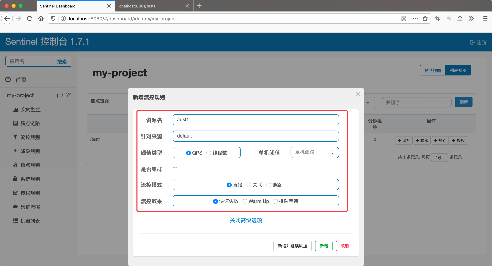
- 资源名：标识资源的唯一名称，默认为请求路径，也可以在客户端中使用
SentinelResource配置； - 针对来源：Sentinel可以针对服务调用者进行限流，填写微服务名称即
spring.application.name，默认为default，不区分来源； 阈值类型、单机阈值：
- QPS（Queries-per-second，每秒钟的请求数量）：当调用该api的QPS达到阈值的时候，进行限流；
- 线程数：当调用该api的线程数达到阈值的时候，进行限流。
是否集群：默认不集群；
流控模式：
- 直接：当api调用达到限流条件的时，直接限流；
- 关联：当关联的资源请求达到阈值的时候，限流自己；
- 链路：只记录指定链路上的流量（指定资源从入口资源进来的流量，如果达到阈值，则进行限流）。
流控效果：
- 快速失败：直接失败；
- Warm Up：根据codeFactor（冷加载因子，默认值为3）的值，从阈值/codeFactor，经过预热时长，才达到设置的QPS阈值；
- 排队等待：匀速排队，让请求匀速通过，阈值类型必须设置为QPS，否则无效。
QPS直接失败
演示下QPS直接失败设置及效果。点击簇点链路列表中/test1请求后面的流控按钮：
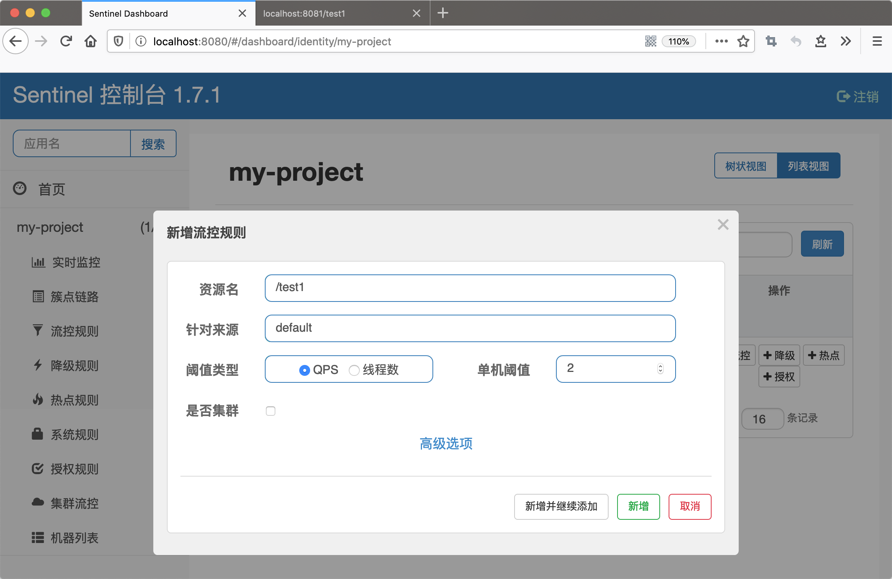
上面设置的效果是，1秒钟内请求/test1资源的次数达到2次以上的时候，进行限流。
点击新增按钮后，列表会跳转到”流控规则”菜单下，所以我们也可以在这里设置流控规则，不过一般还是习惯直接在簇点链路列表中直接选中资源添加流控规则。新增后，我们访问http://localhost:8081/test1，看看效果：

当手速快点的时候（1秒超过2次），页面返回Blocked by Sentinel (flow limiting)。
线程数直接失败
改造下TestController：
1 |
|
让方法休眠1秒，更容易出现效果。重启项目，然后在sentinel控制台中添加如下流控规则：
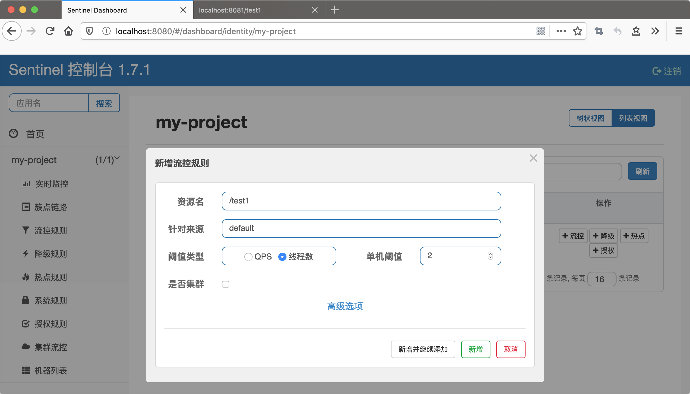
多次访问http://localhost:8081/test1，效果：

关联
改造TestController，添加一个新的api接口：
1 |
|
重启项目，浏览器中访问下这两个请求，然后在sentinel控制台簇点链路列表中，点击test1后的流控按钮：
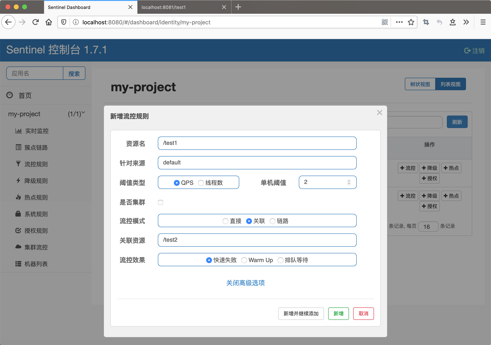
上述流控规则表示：当1秒内访问/test2的次数大于2的时候，限流/test1。
我们使用postman来密集访问/test2，然后我们手动浏览器请求/test1，看看效果。postman设置如下规则：
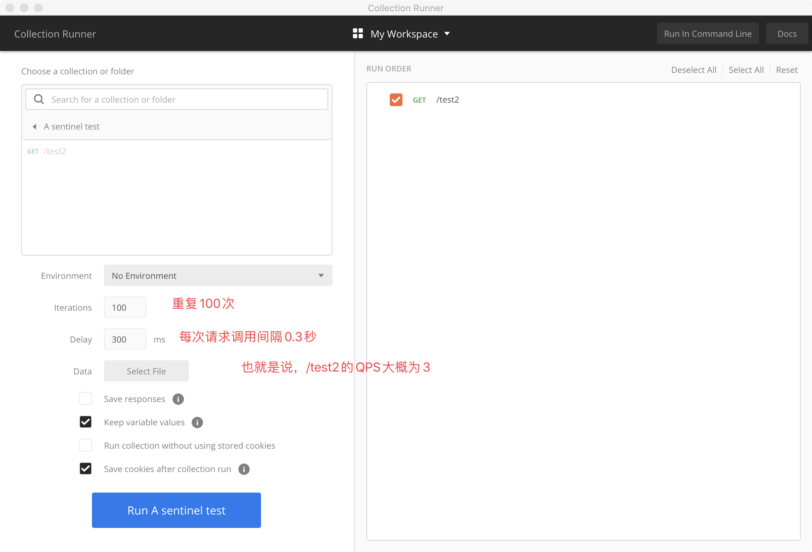
然后点击Run按钮，我们回到浏览器，访问：http://localhost:8081/test1：

可以看到/test1已经被限流了。
链路
在演示链路限流之前，我们先改造改造sentinel客户端代码。在项目的cc.mrbird.sentinel目录下新建service包，然后在该包下新建HelloService：
1 |
|
@SentinelResource("hello")将该方法标识为一个sentinel资源，名称为hello。
接着在TestController中使用该资源：
1 |
|
重启项目，在浏览器中多次访问这两个api，然后查看sentinel控制台簇点链路：
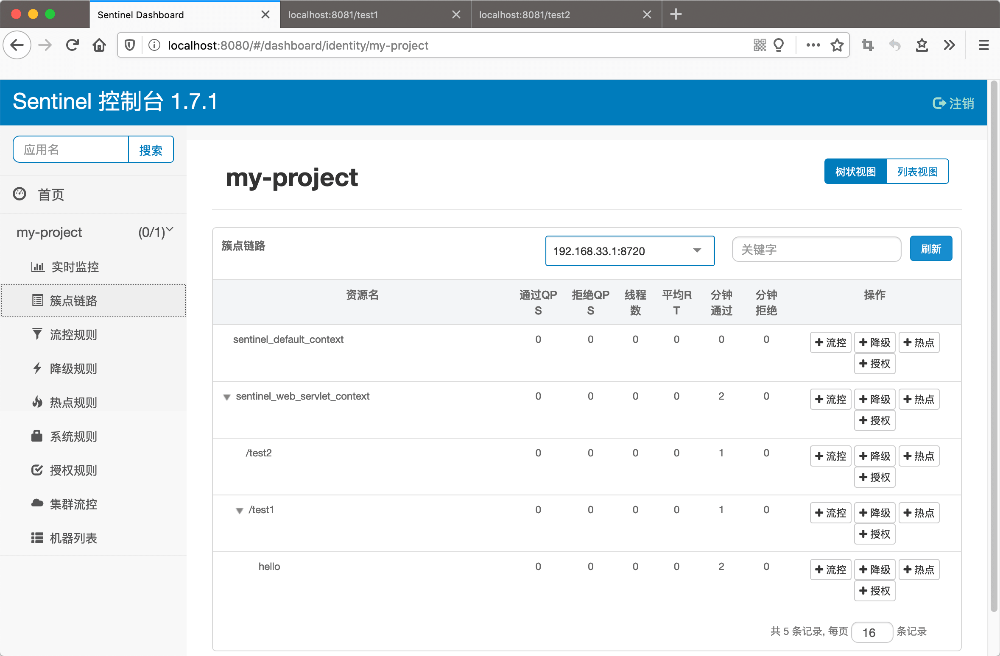
然后点击hello资源后面的流控按钮：
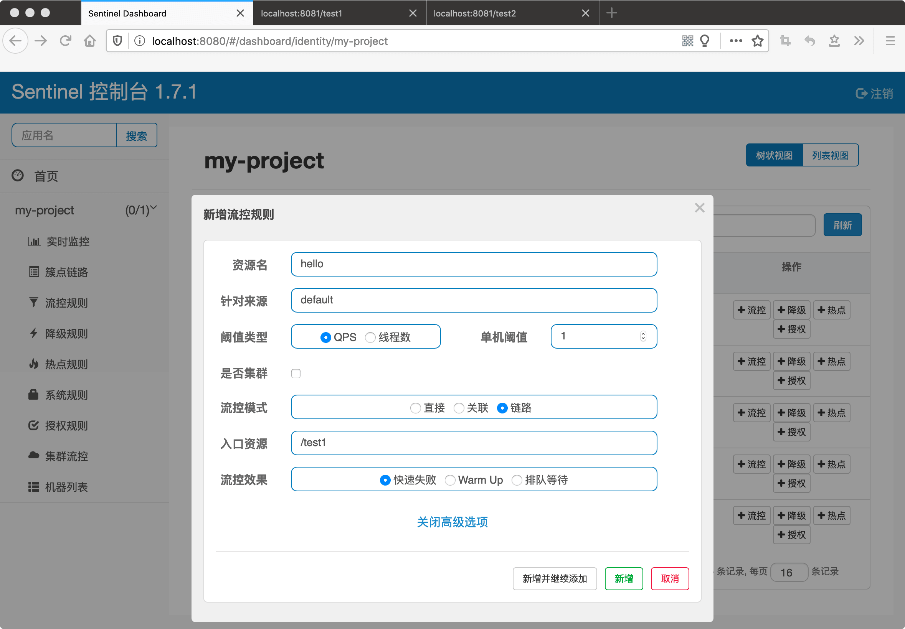
上述配置的意思是，当通过/test1访问hello的时候，QPS大于1则进行限流；言外之意就是/test2访问hello请求并不受影响。
但是实际测试并没有生效😡，具体可以参考issue：https://github.com/alibaba/Sentinel/issues/1213。
预热Warm Up
流控效果除了直接失败外，我们也可以选择预热Warm Up。
sentinel客户端的默认冷加载因子coldFactor为3，即请求QPS从 threshold / 3 开始，经预热时长逐渐升至设定的QPS阈值。
比如：
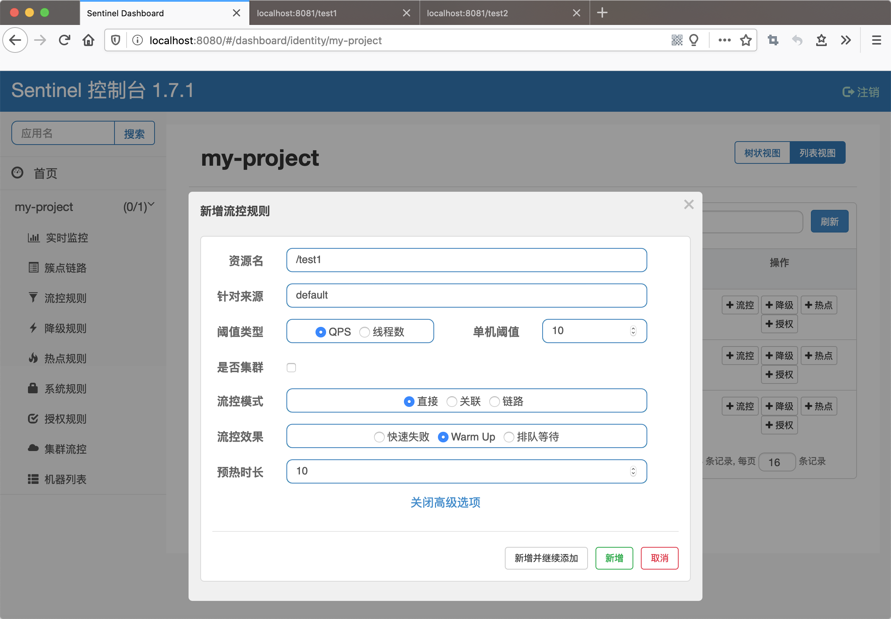
上面的配置意思是：对于/test1资源，一开始的QPS阈值为3（10/3），经过10秒后，QPS阈值达到10，过程类似于下图：
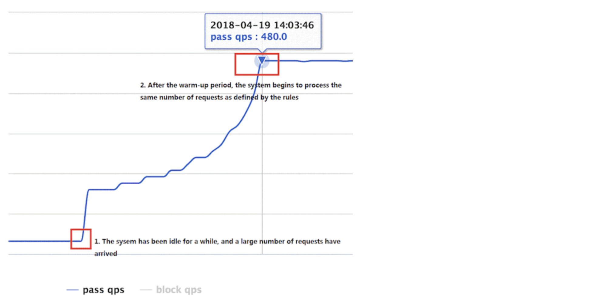
效果我就不演示了，大概效果就是使用浏览器访问http://localhost:8081/test1，以最快的手速点刷新，一开始会常看到Blocked by Sentinel (flow limiting)的提示，10秒后几乎不再出现（因为你的手速很难达到1秒10下）。
排队等待
排队等待方式不会拒绝请求，而是严格控制请求通过的间隔时间，也即是让请求以均匀的速度通过。
修改TestController的代码：
1 |
|
重启项目，浏览器访问localhost:8081/test1，然后点击sentinel控制台簇点链路列表的/test1流控按钮：
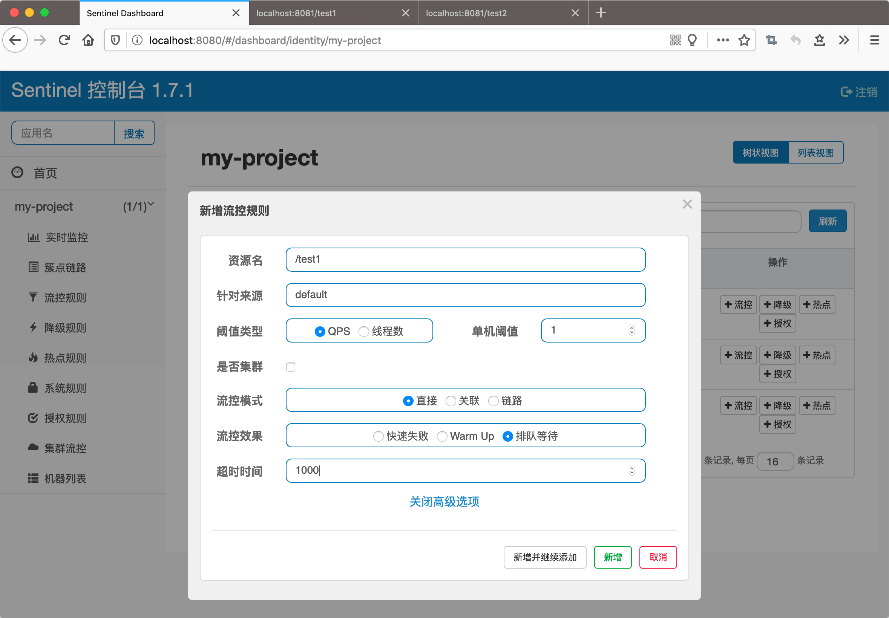
上述配置的含义是，访问/test1请求每秒钟最多只能1次，超过的请求排队等待，等待超过1000毫秒则超时。新增该规则后，多次快速访问localhost:8081/test1，sentinel客户端控制台日志打印如下：
1 | 2020-03-18 16:17:23.247 INFO 44688 --- [nio-8081-exec-2] c.m.sentinel.controller.TestController : test1 |
每笔请求时间间隔1秒。
降级规则
降级配置页面：
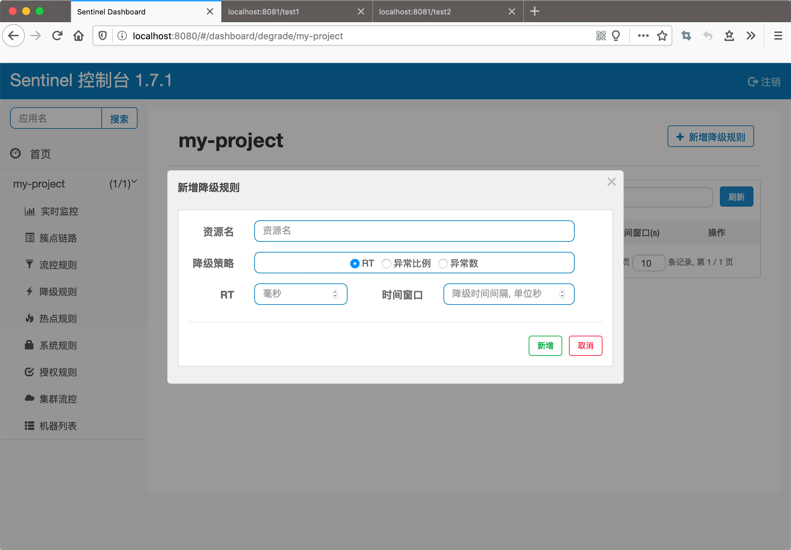
降级策略分为3种：
- RT，平均响应时间 (DEGRADE_GRADE_RT)：当 1s 内持续进入 5 个请求，对应时刻的平均响应时间（秒级）均超过阈值（count，以 ms 为单位），那么在接下的时间窗口（DegradeRule 中的 timeWindow，以 s 为单位）之内，对这个方法的调用都会自动地熔断（抛出 DegradeException）。注意 Sentinel 默认统计的 RT 上限是 4900 ms，超出此阈值的都会算作 4900 ms，若需要变更此上限可以通过启动配置项
-Dcsp.sentinel.statistic.max.rt=xxx来配置。 - 异常比例 (DEGRADE_GRADE_EXCEPTION_RATIO)：当资源的每秒请求量 >= 5，并且每秒异常总数占通过量的比值超过阈值（DegradeRule 中的 count）之后，资源进入降级状态，即在接下的时间窗口（DegradeRule 中的 timeWindow，以 s 为单位）之内，对这个方法的调用都会自动地返回。异常比率的阈值范围是 [0.0, 1.0]，代表 0% - 100%。
- 异常数 (DEGRADE_GRADE_EXCEPTION_COUNT)：当资源近 1 分钟的异常数目超过阈值之后会进行熔断。注意由于统计时间窗口是分钟级别的，若 timeWindow 小于 60s，则结束熔断状态后仍可能再进入熔断状态。
RT
修改TestController的代码：
1 |
|
重启项目，浏览器访问localhost:8081/test1，然后点击sentinel控制台簇点链路列表的/test1降级按钮：
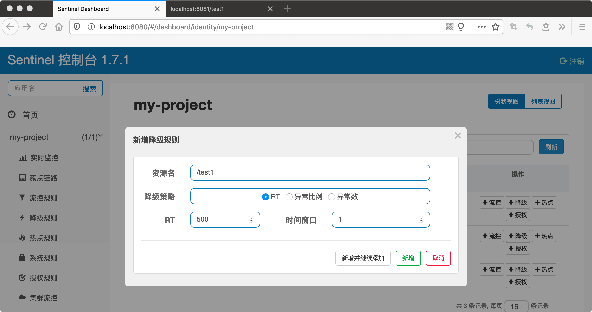
上面配置的含义是：如果/test1的QPS大于5，并且平均响应时间（以秒级统计）大于500（RT）毫秒，那么在未来的1秒钟（时间窗口）内，sentinel断路器打开，该api接口不可用。
我们使用JMeter模拟并发访问情形：
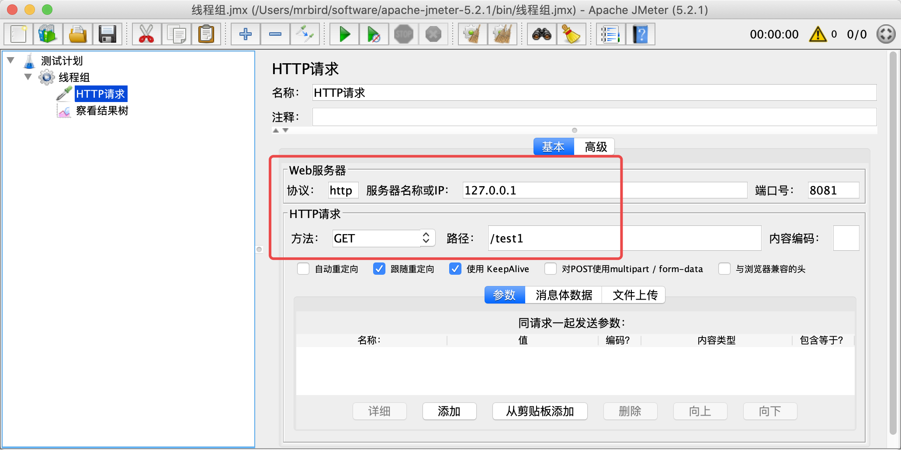
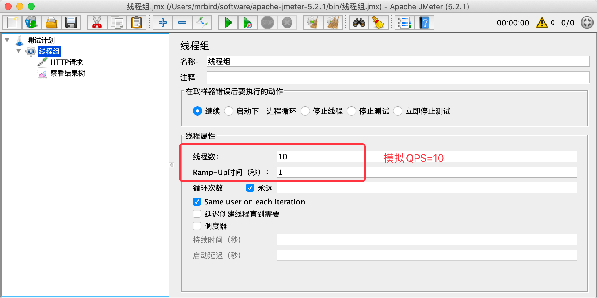
上面的QPS为10，而且我们的/test1接口响应时间在1秒左右，根据我们上面配置的降级规则，肯定会触发降级，使用JMeter测试结果如下：
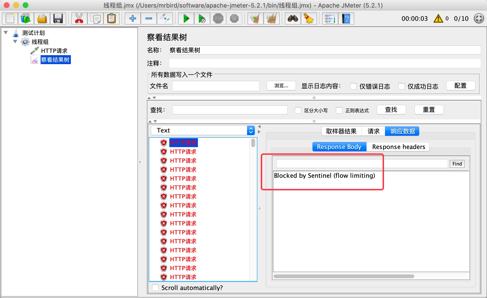
可以看到，程序很快就触发了降级，断路器打开，后续的请求都返回了Blocked by Sentinel (flow limiting)。停掉JMeter，浏览器访问localhost:8081/test1
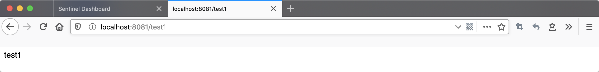
降级规则不再符合，所以断路器合上，请求正常响应。
异常比例
修改TestController的代码：
1 |
|
重启项目，浏览器访问localhost:8081/test1，然后点击sentinel控制台簇点链路列表的/test1降级按钮：
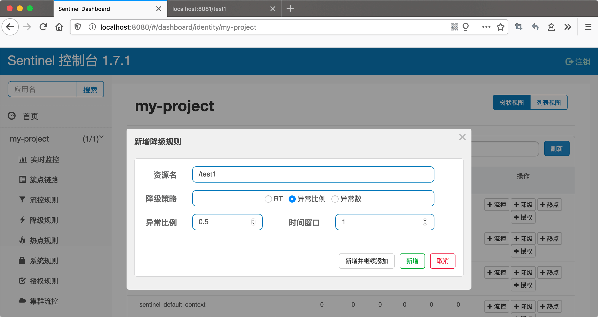
上面的配置含义是：如果/test1的QPS大于5，并且每秒钟的请求异常比例大于0.5的话，那么在未来的1秒钟（时间窗口）内，sentinel断路器打开，该api接口不可用。
也就是说，如果一秒内有10个请求进来，超过5个以上都出错，那么会触发熔断，1秒钟内这个接口不可用。
还是使用上面的JMeter测试，开启JMeter后，使用浏览器访问：http://localhost:8081/test1
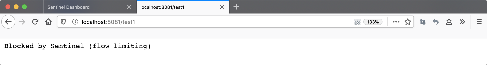
关掉JMeter后，再次访问http://localhost:8081/test1：
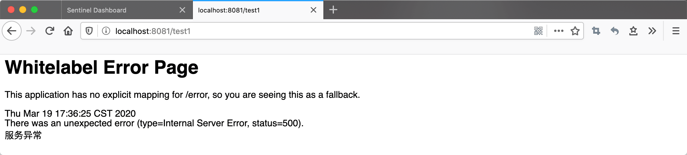
异常数
奖及策略为异常数时表示：当指定时间窗口内，请求异常数大于等于某个值时，触发降级。比如有如下规则：
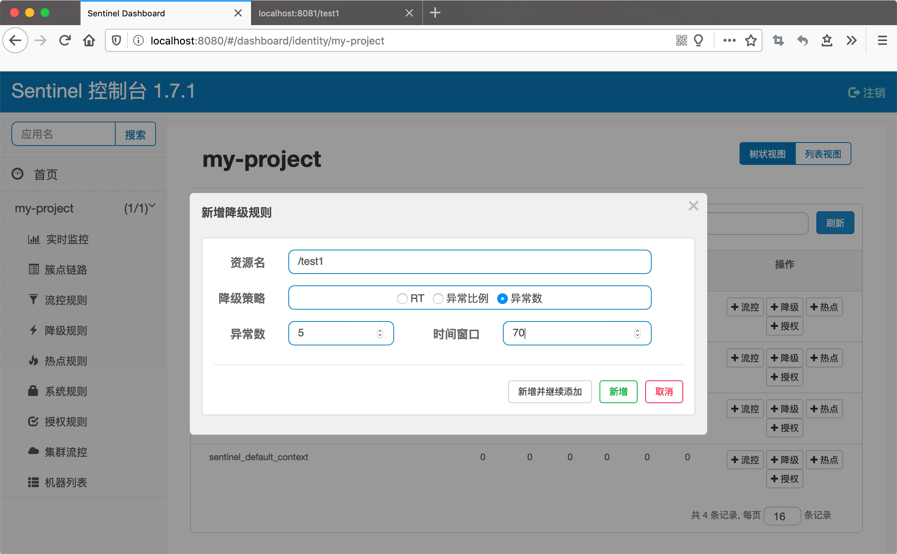
上面的规则表示：在70秒内，访问/test1请求异常的次数大于等于5，则触发降级。测试一波：

可以看到，当第5次访问的时候成功触发了降级。
热点规则
热点即经常访问的数据。很多时候我们希望统计某个热点数据中访问频次最高的数据，并对其访问进行限制。
比如在TestController中有如下方法：
1 | ("buy") |
对这个资源添加热点规则：
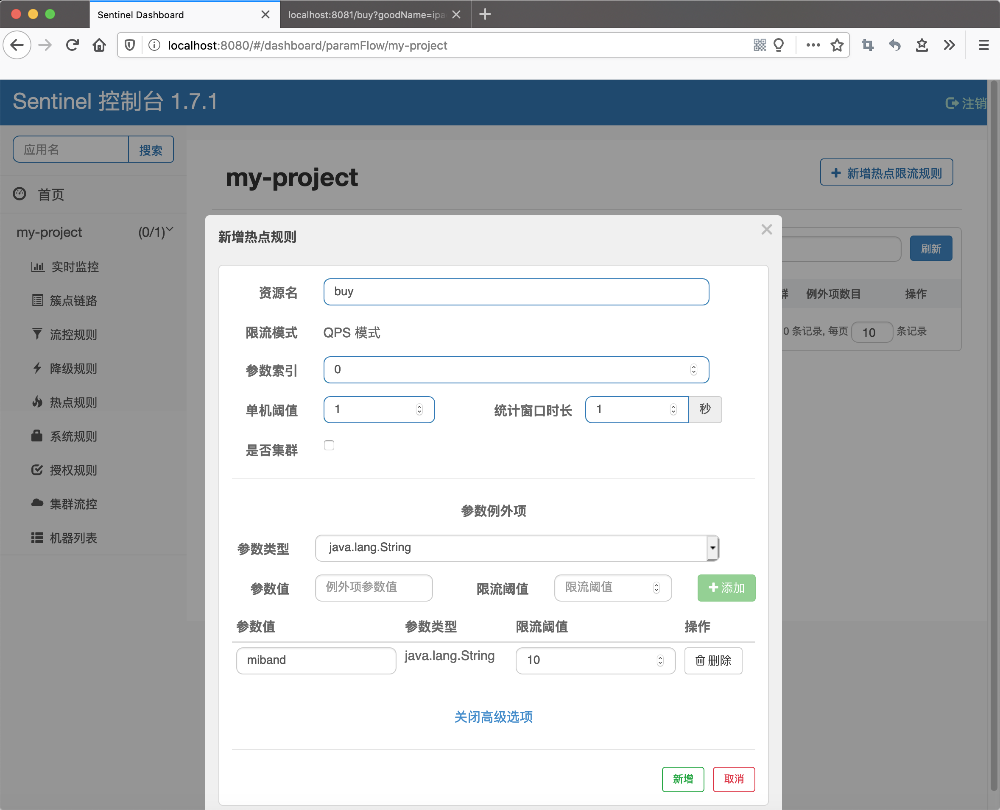
上面的配置含义是：对buy资源添加热点规则，当第0个参数的值为miband的时候QPS阈值为10，否则为1。此外，如果第0个参数不传，那么这笔请求不受该热点规则限制。效果如下：

系统规则
系统规则则是针对整个系统设置限流规则，并不针对某个资源，设置页面如下：
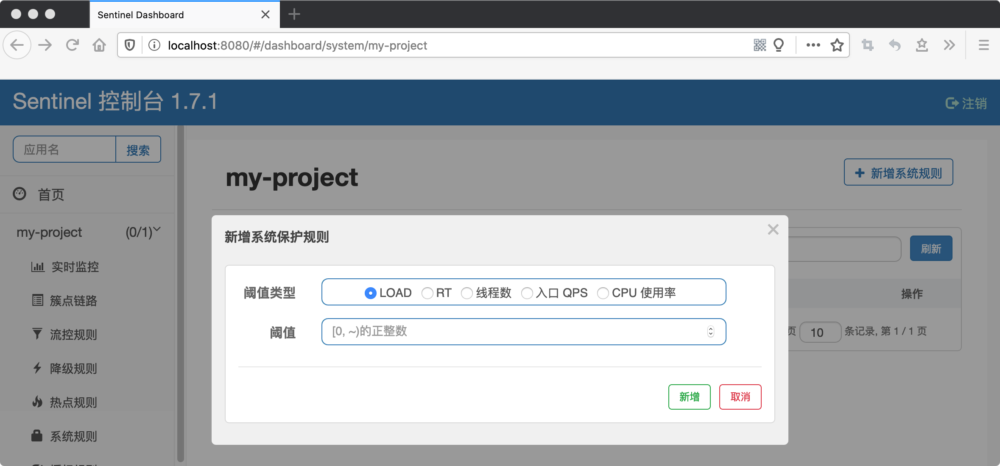
阈值类型包含以下五种：
- Load 自适应（仅对 Linux/Unix-like 机器生效）：系统的 load1 作为启发指标，进行自适应系统保护。当系统 load1 超过设定的启发值，且系统当前的并发线程数超过估算的系统容量时才会触发系统保护（BBR 阶段）。系统容量由系统的 maxQps minRt 估算得出。设定参考值一般是 CPU cores 2.5。
- CPU usage（1.5.0+ 版本）：当系统 CPU 使用率超过阈值即触发系统保护（取值范围 0.0-1.0），比较灵敏。
- 平均 RT：当单台机器上所有入口流量的平均 RT 达到阈值即触发系统保护，单位是毫秒。
- 并发线程数：当单台机器上所有入口流量的并发线程数达到阈值即触发系统保护。
- 入口 QPS：当单台机器上所有入口流量的 QPS 达到阈值即触发系统保护。
比较直观就不演示了。
授权规则
授权规则用于配置资源的黑白名单：
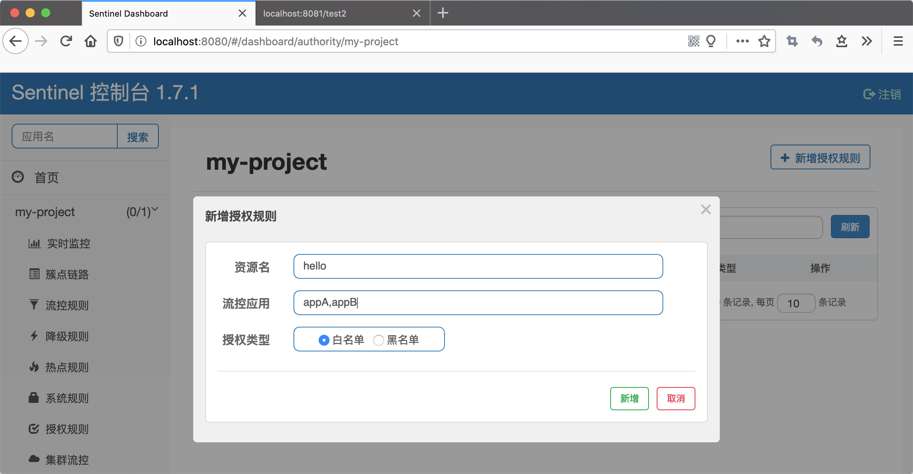
上述配置表示：只有appA和appB才能访问hello资源。